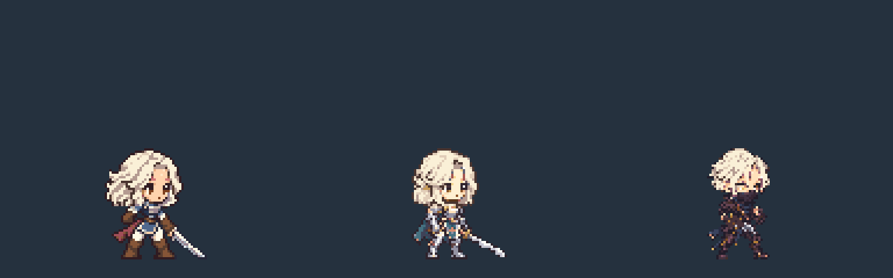
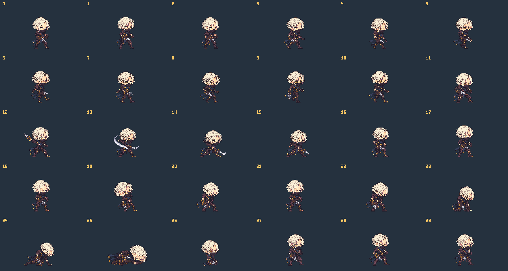
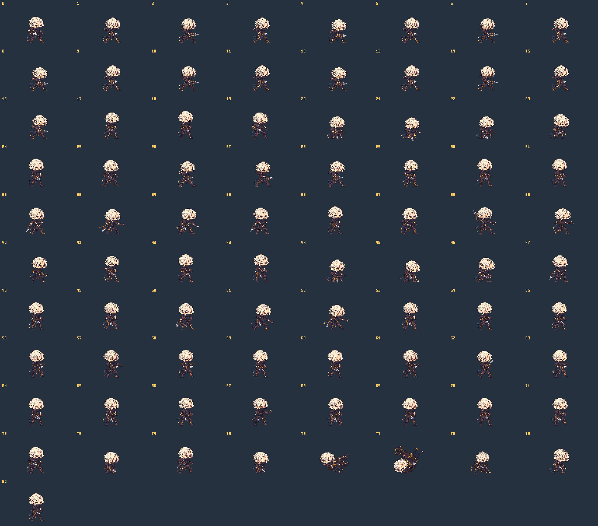

남성 · 2등신 · 카타르 / 단검
기본 동작 7종과 스킬 동작 12종 · 게임 스킬 15개 연결

128×120 캔버스 · 발 기준 (64,112) · 대기 기본 키 48px. 화면 재생 영역은 위쪽 여백만 잘라 표시합니다.
| 스킬 ID | 동작 | 타격 시작 / 길이 |
|---|


원화 45개를 채택하고 준비·회수·정착 자세를 공유했습니다. 111개 프레임 항목이 모두 별개의 신규 원화인 것은 아닙니다. 게임 적용 전 검토용 패키지입니다.